【赋墨沉湘·十七】弦歌闻雅意
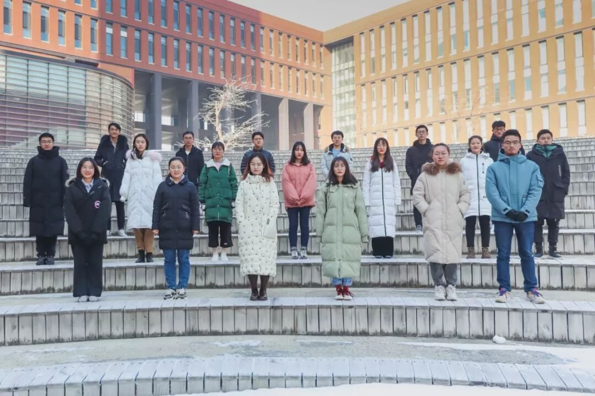
弦歌闻雅意
八月盛夏的渝州之行如洪崖洞般恍若一梦，南方寒冬的星城苦旅却仿佛仍在昨天。
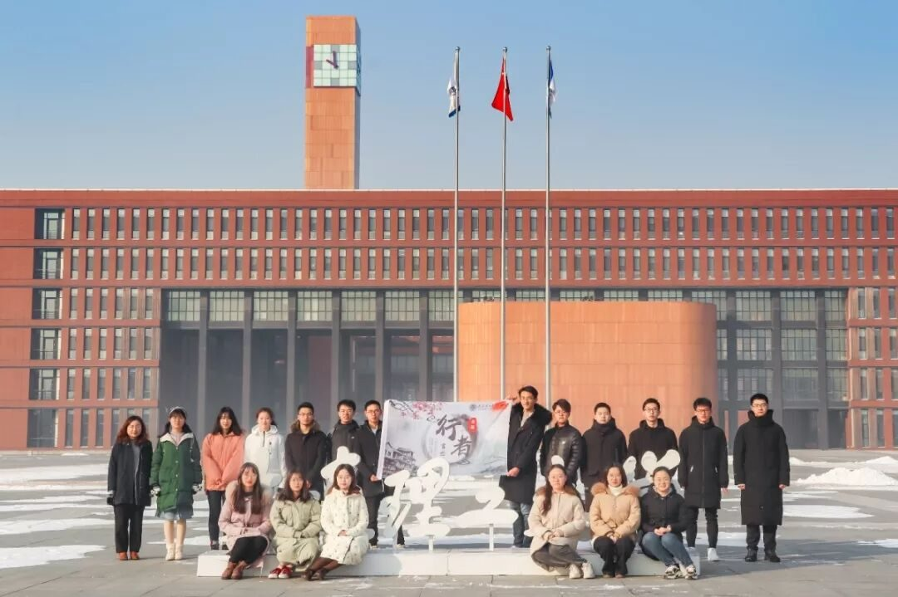
28个小时的火车，是同去年有些不同的感受。手机导航里弯弯曲曲的轨迹，经河北、河南，至湖北，到湖南。仿若真的一条漫漫文化苦旅之路，一路上扒着火车的小窗户，经过武汉时且看了两分钟的浩浩长江（希望这座英雄的城市可以挺住！）地铁的最后一班送了我们一半的路程，余下的19个人在午夜十二点的长沙街头拖着行李箱哗啦啦的走过去，不同于北方的朔冷，是潮湿的凉意。凌晨的夜宵，火盆旁烤着火，想着是了，这便是要开始了。
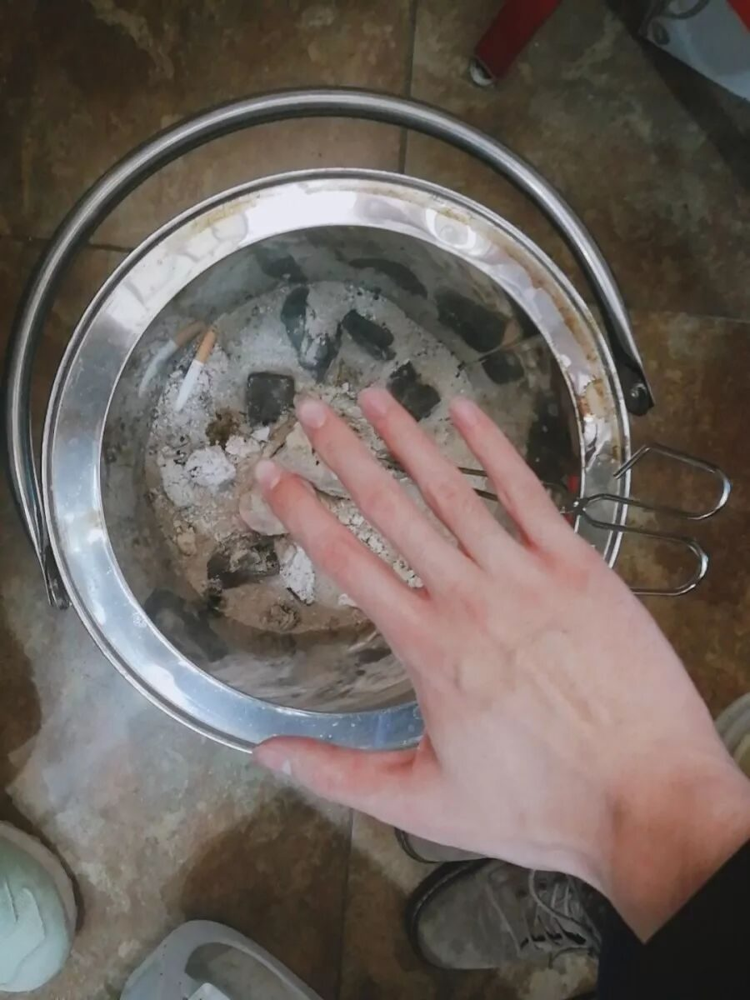
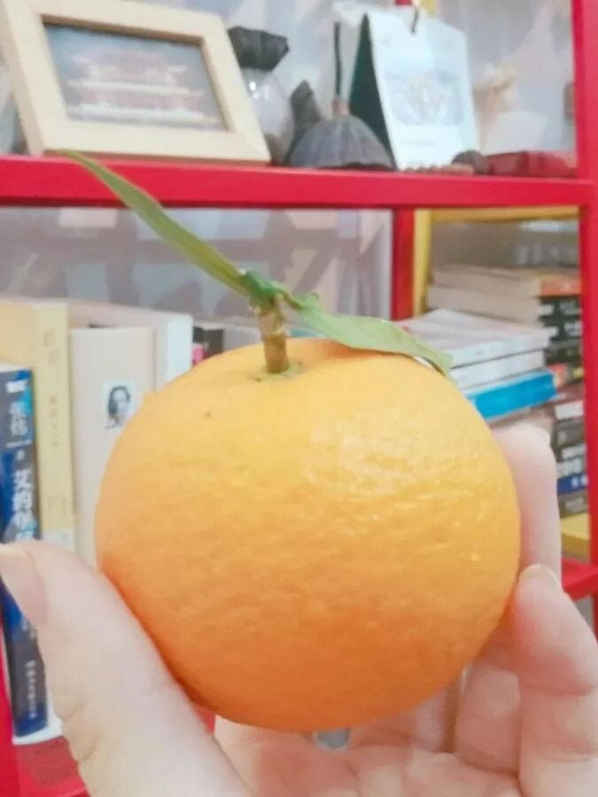
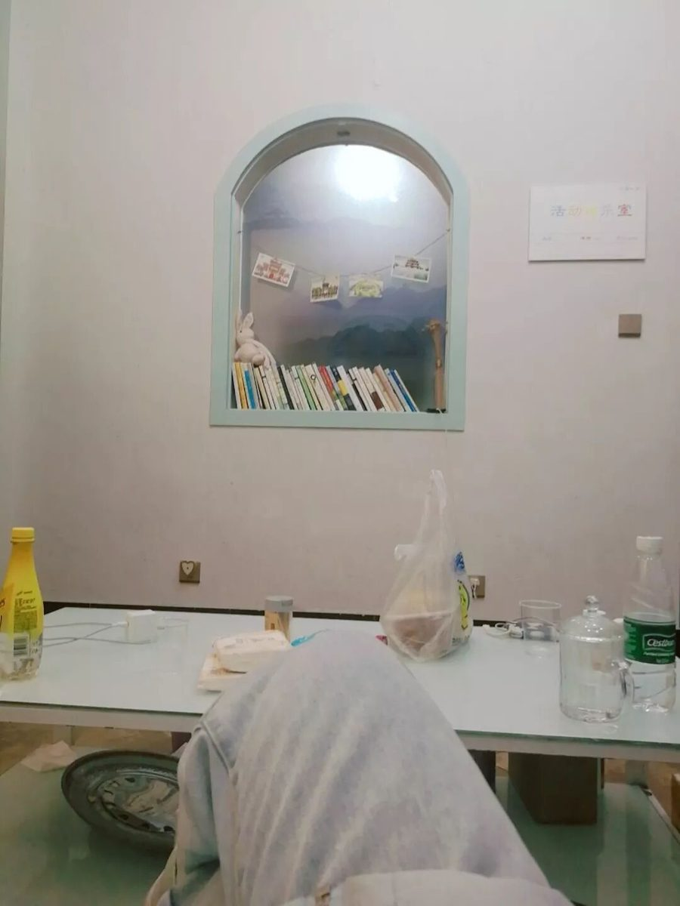
湖湘精神最早可追溯到炎帝和禹帝，炎帝带来了水利农耕，这是文明的伊始。禹帝重孝，可以说是儒家思想的雏形。屈原贾谊为这片土地带来了爱国忧民，民本思想。长沙历来为卑湿之地，造就了原住民“霸”“蛮”的特点。由于种种历史原因充斥着杀伐与征战，常常战后城空，大量移民的涌入为这片古老的土地带来了开拓精神。同时最早的水稻在这里栽培，吃的苦的湖南人烧制的长沙窑更是远销欧亚大陆。有了经济基础，就有了文化的需要。书院制度的建立使得儒家思想深入人心，书生研究探讨学问志在发表言论影响国家政策，此为经世致用思想。种种思想学潮使得近代风云变幻之际涌现了一批批名人伟人。“经世致用、敢为人先、实事求是”即是湖湘文化的精髓。我更偏爱俗语的“吃的苦”“霸的蛮”“不怕死”“耐得烦”，是生活在这片卑湿之地上的人们面对苦难仍执着于对生活的朴实。
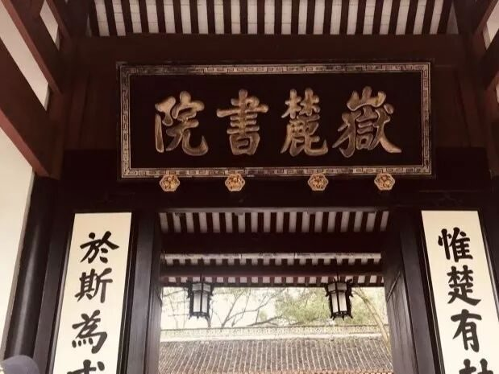
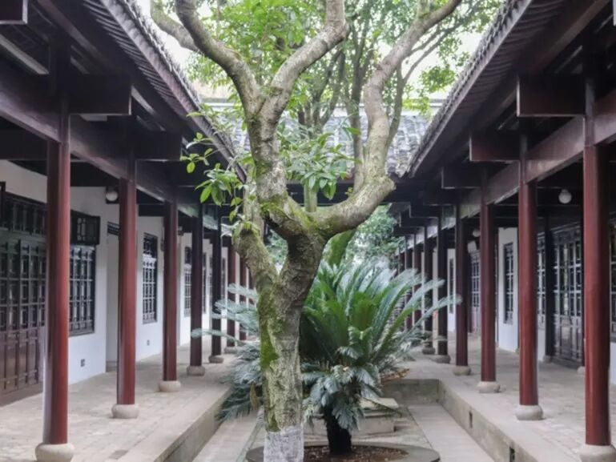
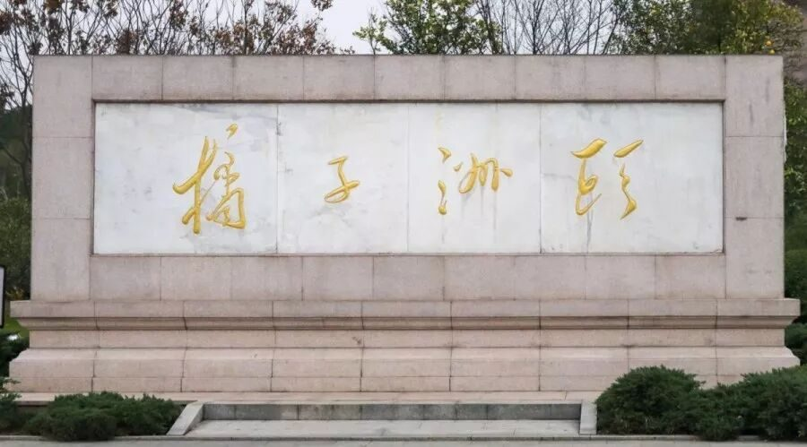
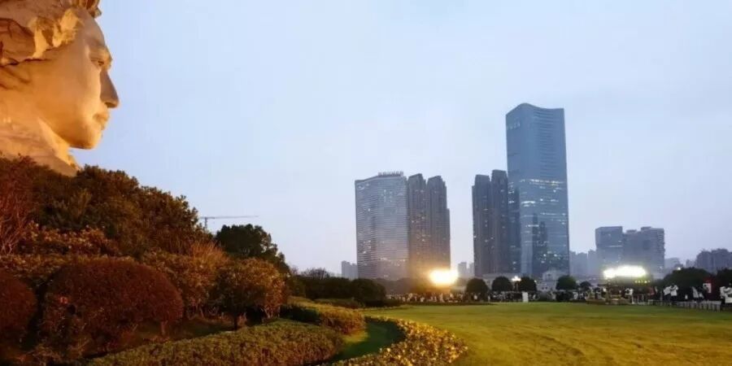
省博的主题为“湖南人”，前言的最后是：“谨以此陈列献给曾经、现在、将来在湖南这片土地上生活、游历，以及对湖南历史文化发展起推动作用的人！”
至此，五天的文化苦旅激荡在胸间。站在这行刻字面前，大抵是五天冬雨长沙里的曲折求索，是岳麓书院的千年弦歌不辍，湘绣的燕子回尾，是铜官窑诗意的彩瓷，贾谊的经世致用，是简牍博物馆里朴实的讲述四万余块经手的简牍，是刘少奇同志纪念馆里一声声亲切的少奇同志……此时此刻的我同馆内千千万万的游览者是不尽相同的，我真真正正的沿着湖湘文化的时间轴走来，期待着省博给予我最终的答案。
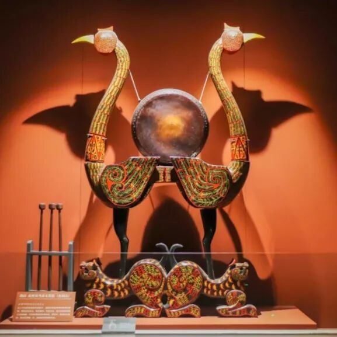
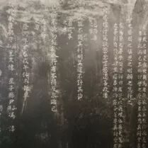
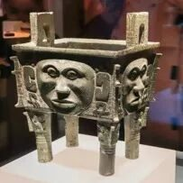
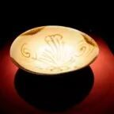
而省博给予我的不仅仅是关于湖湘文化的解答，站在浩瀚厚重的历史面前，屏住呼吸，便与历史的某缕烟云联系在了一起。豁然开朗，那些之前每天想的问题，会突然被稀释，内心涌现出大气磅礴之感，是学校宅家不能给予的。
“有人把生命局促于互窥互监，互猜互损。
有人把生命释放于远山沧海，大地长天。”人生总要心中长怀些高远辽阔的信念，方能应对生活中几多烦忧。行者无疆便是那一期一会的老友，共赴大地长天之约。而令我欣然的是在行程的最后，有参加一期的新队员熟悉的说觉得这个团队给予自己的远胜于自己所做的，有参加了三期的老队员感慨在这里共度的日子极大缓解了学校的焦虑也重新审视了自己，我想将其归结为文化的潜移默化，更想说是行者无疆这个团队的独特魅力。也是在最后想要留给未来更多将继续参与这个团队的行者们。希望几天的文化苦旅收获的不仅仅是趟过冬雨追寻文化一路辛劳的感动，不仅仅是志同道合的同行者，也不仅仅是触碰到了一些精神文化的壁垒，而是跟随行者无疆的视角一道去见证广博。
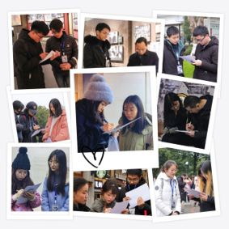
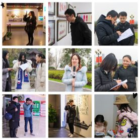
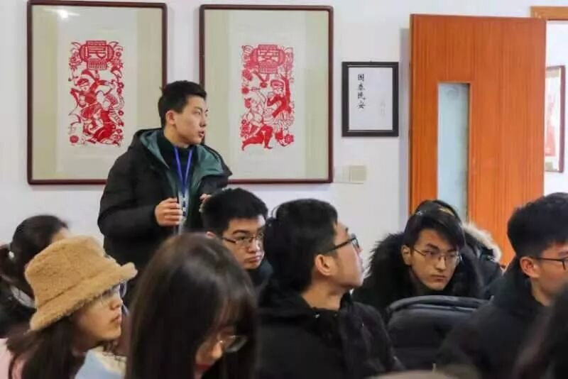
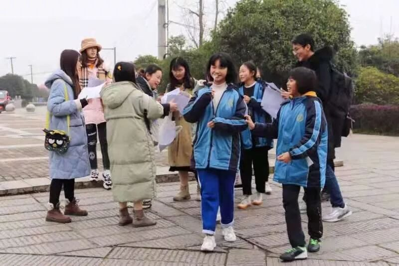
虽烟云过眼，而烟云固长郁于胸中也。是这个团队天然的馈赠。
此致，行者无疆。
来源 | 行者无疆实践团
文字 | 陶奇
排版 | 张清雅
审核 | 段智然 康艳虎 黄玲
行者无疆实践团
QQ：2758025831

随行者一起认识世界
长按二维码